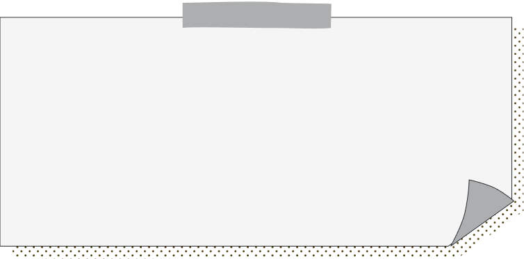

<div class="s_section">
    <div class="gutter">
        <h1>【SimpleBar】<br>スクロールバーを実装する<br>（横スクロール）</h1>
        <div class="scroll__inner" data-simplebar data-simplebar-auto-hide="false">
            <div class="f_area">
                <div class="f_one">
                    <a href="https://125naroom.com/web/4184" target="_blank"></a>
                </div>
                <div class="f_one">
                    <a href="https://125naroom.com/web/4184" target="_blank"></a>
                </div>
                <div class="f_one">
                    <a href="https://125naroom.com/web/4184" target="_blank"></a>
                </div>
            </div>
        </div>
        <a href="https://125naroom.com/web/4184" target="_blank" class="_a">詳しくはこちら</a>
    </div>


    <svg version="1.1" id="レイヤー_1" xmlns="http://www.w3.org/2000/svg" xmlns:xlink="http://www.w3.org/1999/xlink" x="0px"
        y="0px" viewBox="0 0 1300 1341" style="enable-background:new 0 0 2000 1341;" xml:space="preserve">
        <style type="text/css">
            .st0 {
                fill: #8DBBFF;
            }

            .st1 {
                fill: #7688FF;
            }

            .st2 {
                fill: #584EFF;
            }
        </style>
        <path class="st0" d="M0,0l39.4,21.3C78.9,43,157.8,85,236.7,96s157.8-11,236.7-5.3C552.3,96,631.2,128,710.1,112
        s157.8-80,236.7-85.3C1025.7,21,1104.6,75,1183.5,96s157.8,11,197.2,5.3l39.4-5.3v780.2h-47.8c-39.4,0-118.3,0-197.2,0
        s-157.8,0-236.7,0s-157.8,0-236.7,0s-157.8,0-236.7,0s-157.8,0-236.7,0s-157.8,0-197.2,0H-0.1L0,0z" />
        <path class="st1" d="M0,232.4l39.4,21.3c39.5,21.7,118.4,63.7,197.3,74.7s157.8-11,236.7-5.3c78.9,5.3,157.8,37.3,236.7,21.3
        s157.8-80,236.7-85.3c78.9-5.7,157.8,48.3,236.7,69.3s157.8,11,197.2,5.3l39.4-5.3v780.2h-47.8c-39.4,0-118.3,0-197.2,0
        s-157.8,0-236.7,0s-157.8,0-236.7,0s-157.8,0-236.7,0s-157.8,0-236.7,0s-157.8,0-197.2,0H-0.1L0,232.4z" />
        <path class="st2" d="M0,461.3l39.4,21.3c39.5,21.7,118.4,63.7,197.3,74.7s157.8-11,236.7-5.3c78.9,5.3,157.8,37.3,236.7,21.3
        s157.8-80,236.7-85.3c78.9-5.7,157.8,48.3,236.7,69.3s157.8,11,197.2,5.3l39.4-5.3v780.2h-47.8c-39.4,0-118.3,0-197.2,0
        s-157.8,0-236.7,0s-157.8,0-236.7,0s-157.8,0-236.7,0s-157.8,0-236.7,0s-157.8,0-197.2,0H-0.1L0,461.3z" />
        <foreignObject width="100%" height="1000px">

        </foreignObject>

    </svg>


    <div class="flex">
        <div class="buttanBox">
            
            <p>aaa</p>
        </div>

    </div>
</div>

<div class="artBox sub1">
    <div class="dashed-line">
    </div>
    <div class="flex">
        <div class="artBox">
            <br>
            <h2> 4月</h2>
            <br>
            <br>
            <h2> 5月</h2>
        </div>
        <div class="rect sub1">
            <div class="vertical-text">
                <p>情報表現基礎Ⅱ</p>
            </div>
        </div>
        <p>コンテンツ</p>
    </div>
    <div class="dashed-line">
    </div>
    <div class="flex">
        <div class="artBox">
            <br>
            <h2>6月</h2>
            <br>
            <br>
            <h2>7月</h2>
        </div>
        <div class="rect sub1">
            <div class="vertical-text">
                <p>情報デザインⅠ</p>
            </div>
        </div>
        <p>コンテンツ</p>
    </div>
    <div class="dashed-line">
    </div>
    <div class="flex">
        <div class="artBox">
            <h2>8月</h2>
            <h2>9月</h2>
        </div>
        <div class="rect sub3">
            <div class="vertical-text">
                <p>夏休み</p>
            </div>
        </div>
        <p>コンテンツ</p>
    </div>
    <div class="dashed-line">
    </div>
    <div class="flex">
        <div class="artBox" style="margin-left: -15px;">
            <br>
            <h2>10月</h2>
            <br>
            <br>
            <h2>11月</h2>
        </div>
        <div class="rect sub1">
            <div class="vertical-text">
                <p>情報表現基礎Ⅲ</p>
            </div>
        </div>
        <p>コンテンツ</p>
    </div>
    <div class="dashed-line">
    </div>
    <div class="flex">
        <div class="artBox" style="margin-left: -15px;">
            <br>
            <h2>12月</h2>
            <br>
            <br>
            <h2>1月</h2>
        </div>
        <div class="rect sub1">
            <div class="vertical-text">
                <p>情報デザインⅡ</p>
            </div>
        </div>
        <p>コンテンツ</p>
    </div>
    <div class="dashed-line">
    </div>
    <div class="flex">
        <div class="artBox">
            <h2>2月</h2>
            <h2>3月</h2>
        </div>
        <div class="rect sub3">
            <div class="vertical-text">
                <p>冬休み</p>
            </div>
        </div>
        <p>コンテンツ</p>
    </div>


</div>
<style>
    .flex {
        display: flex;
        justify-content: center;
    }

    .buttanBox {
        width: 30%;
        position: relative;

    }

    .buttanBox p {
        color: #0f0f0f;
        /* 文字色 */
        font-size: 24px;
        /* 文字の大きさ */
        position: absolute;
        left: 50%;
        top: 50%;
        transform: translate(-50%, -50%);
    }

    /*=========
scrollbar
=========*/

    .scroll__inner {
        background-color: #ffffff;
        padding: 0 0 20px 0;
        overflow-x: scroll;
        -ms-overflow-style: none;
        /* IE, Edge 対応 */
        scrollbar-width: none;
        /* Firefox 対応 */
    }

    .scroll__inner::-webkit-scrollbar {
        /* Chrome, Safari 対応 */
        display: none;
    }

    .simplebar-scrollbar::before {
        background: #ffffff;
        border-radius: 0;
        height: 5px !important;
        margin-left: 2px;
        margin-top: 3px;
    }

    .simplebar-scrollbar.simplebar-visible::before {
        opacity: 1;
    }

    .simplebar-track {
        background: #cbd2e0;
        height: 15px !important;
    }

    /*===========
.f_area
===========*/
    .f_area {
        display: flex;
        justify-content: center;
        width: 1800px;
    }

    .f_area .f_one {
        width: 33.333%;
    }

    .f_area .f_one a {
        display: block;
        overflow: hidden;
        backface-visibility: hidden;
    }

    .f_area .f_one a img {
        max-width: 100%;
        height: auto;
        vertical-align: top;
        transform: scale(1);
        transition: .5s;
    }

    .f_area .f_one a img:hover {
        transform: scale(1.1);
    }

    /*=========
base
=========*/

    html,
    body {
        margin: 0;
        padding: 0;
    }

    body {
        font-family: YuGothic, "游ゴシック体", "Yu Gothic", "ヒラギノ角ゴ Pro", "Hiragino Kaku Gothic Pro", "メイリオ", Meiryo, "ＭＳ Ｐゴシック", "MS PGothic", sans-serif;
        letter-spacing: .025em;
        line-height: 1.8;
    }

    * {
        box-sizing: border-box;
        margin: 0;
        padding: 0;
    }

    .s_section {
        max-width: 1020px;
        margin: 0 auto;
        padding: 2rem 10px;
    }

    .gutter>*:not(:last-child) {
        margin-bottom: 1.5rem;
    }

    h1,
    h2 {
        color: #333;
        font-size: 22px;
        font-weight: bold;
        text-align: center;
        border-top: 2px solid #333333;
        border-bottom: 2px solid #333333;
        padding: 5px;
        margin-top: 0;
        margin-bottom: 0;
    }

    @media (max-width: 736px) {

        h1,
        h2 {
            font-size: 16px;
        }
    }

    ul.list-disc {
        margin-bottom: 0;
        padding-left: 0;
    }

    .list-disc__item {
        margin-left: 1.5em;
        list-style: disc;
    }

    a._a {
        display: flex;
        justify-content: center;
        align-items: center;
        width: 100%;
        max-width: 300px;
        margin: 0 auto;
        padding: 2.0em 1.0em;
        border: 1px solid #222222;
        background: linear-gradient(to right, #ffffff 50%, #222222 50%);
        background-size: 200% auto;
        box-sizing: border-box;
        color: #222222;
        font-size: 14px;
        text-decoration: none;
        text-align: center;
        transition: .3s;
        position: relative;
    }

    a._a:after {
        content: "";
        position: absolute;
        right: -5px;
        bottom: -5px;
        width: 100%;
        height: 100%;
        border-right: 1px solid #222222;
        border-bottom: 1px solid #222222;
    }

    a._a:hover {
        color: #ffffff;
        background-position: -100% 0;
    }

    img {
        max-width: 100%;
        height: auto;
        vertical-align: top;
    }
</style>